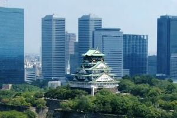
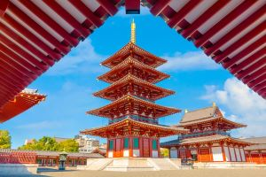
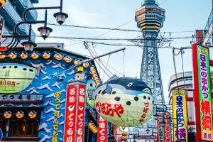
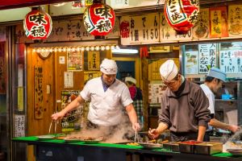

Osaka
Rio em Osaka
Local
Dontonbori in Osaka, Japan
article
Introdução
push_pin
Localização
collections
Multimédia
info
Informações
quiz
Quizz
chat
Comentários
code
HTML5 & CSS
home
Home
Multimédia
Pimba à japonesa
Zé do Pipão
Dançámos toda a noite
Comendo e dançando outra vez
Depois fomos pró meu quarto
E eu apliquei meu japonês
Xinuku takaro toko duro na raxa
Ni xinto pau xovi tuku ya xaxa
Xinuku takaro toko duro na raxa
Ni xinto pau xovi tuku ya xaxa
Xinuku takaro toko duro na raxa
Ni xinto pau xovi tuku ya xaxa
Xinuku takaro toko duro na raxa
Ni xinto pau xovi tuku ya xaxa



